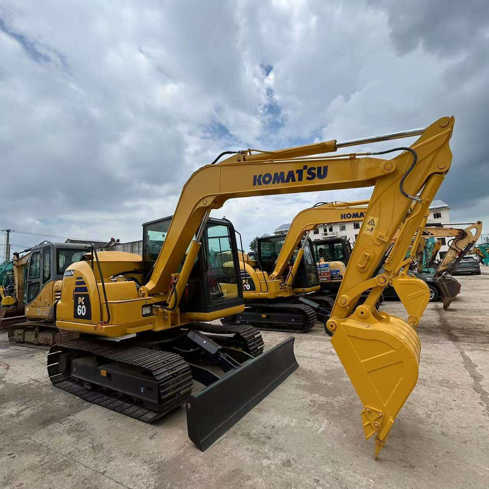

Refurbished Komatsu PC60 Excavator
The Komatsu PC60 is a highly reliable and efficient compact excavator known for its impressive digging capability, fuel efficiency, and smooth operation. With its small size and powerful performance, the PC60 is ideal for tight spaces, small-scale construction projects, and utility work. Whether you're looking to dig trenches, lift materials, or perform landscaping tasks, the refurbished Komatsu PC60 offers the same quality and efficiency of a new model at a fraction of the price.
Honestly, it's almost impossible to buy a brand new excavator from China. They either don't exist or are made in China. If a Chinese seller tells you their Caterpillar/Komatsu/Volvo/Kobelco/Hitachi is brand new, they're lying. Therefore, a refurbished excavator is your best bet.

Here are the detailed specifications for a refurbished Komatsu PC60-7 or PC60-8 excavator:
Operating Weight and Dimensions
- Operating Weight: 5,800–6,200 kg
- Overall Length: ~5.9–6.2 meters
- Overall Width: ~2.3 meters
- Overall Height: ~2.6–2.7 meters
- Tail Swing Radius: ~1.6–1.8 meters
- Ground Clearance: ~370–400 mm
- Track Width: 450 mm standard
Engine and Powertrain
- Engine Model: Komatsu 4D95LE or SAA4D95LE-5
- Rated Power Output: ~41–45 kW (55–60 hp) @ 2,000 rpm
- Maximum Torque: ~220–240 Nm
- Fuel Tank Capacity: ~120 liters
- Travel Speed: 2.8–4.8 km/h
- Swing Speed: ~10 rpm
- Gradeability: Up to 30°
Hydraulic System
- Main Pump Type: Variable displacement axial piston pump
- Flow Rate: ~2 × 85–95 L/min
- System Pressure: Up to 24.5 MPa
- Hydraulic Oil Capacity: ~120–140 liters
- Boom Cylinder Bore: ~100 mm
- Arm Cylinder Bore: ~85 mm
- Bucket Cylinder Bore: ~75 mm
Performance Metrics
- Bucket Capacity: 0.25–0.35 m³
- Max Digging Depth: ~3.9–4.2 meters
- Max Reach (Horizontal): ~6.5–6.8 meters
- Max Dump Height: ~4.5–4.8 meters
- Bucket Digging Force: ~55–60 kN
- Arm Digging Force: ~38–42 kN
Cab and Operator Features
- Cab Type: ROPS/FOPS certified
- Display: Basic LCD or analog gauges (PC60-7); upgraded monitor in PC60-8
- Controls: Pilot joystick controls
- Comfort: Adjustable seat, optional air-conditioning, low vibration cab
- Visibility: Wide glass area, optional rear-view camera
Smart Features and Efficiency
- Fuel Efficiency: Mechanical or electronic fuel injection depending on variant
- Emissions Control: Tier 2 compliant (no DPF or SCR)
- Telematics: KOMTRAX support in PC60-8 (optional)
- Transportability: Easily trailerable under 7-ton class
Attachments Compatibility
- Standard Bucket: 0.25–0.35 m³
- Optional Tools: Hydraulic breaker, auger, compactor, ripper
- Quick Coupler: Manual or hydraulic options available
Refurbishment Scope
Refurbished PC60 units typically include:
- Engine Overhaul: Cylinder head, injectors, turbo, seals
- Hydraulic Restoration: Pump recalibration, valve block testing, hose replacement
- Electrical Diagnostics: Monitor, sensors, wiring harness
- Cab Reconditioning: Seat, joysticks, HVAC, repainting
- Structural Repairs: Boom/bucket welding, bushing replacement, undercarriage rebuild
Overview of the Komatsu PC60 Excavator
The Komatsu PC60 is a mini-excavator that balances performance, durability, and maneuverability, making it a popular choice for projects where space is limited but power is required. With its strong lifting and digging capacity, the PC60 is equipped to handle various applications such as trenching, landscaping, and grading. Its compact design ensures that it can work in confined spaces, making it particularly useful for urban construction, infrastructure development, and residential projects.
Key Specifications of the Komatsu PC60
-
Operating Weight: 6,100–6,300 kg (13,440–13,889 lbs)
-
Engine Power: 36–40 kW (48–54 hp)
-
Max Digging Depth: 4.3 meters (14.1 feet)
-
Max Reach: 6.6 meters (21.6 feet)
-
Bucket Capacity: 0.2–0.3 cubic meters
-
Travel Speed: 5.2–5.5 km/h (3.2–3.4 mph)
-
Fuel Tank Capacity: 120–130 liters (31.7–34.4 gallons)
These specifications allow the Komatsu PC60 to excel in tasks that require both digging power and the ability to maneuver in limited spaces. Despite being compact, this machine delivers solid performance for its size, ensuring productivity and efficiency on various job sites.
Powerful and Efficient Engine
The Komatsu PC60 features a reliable engine that strikes a balance between power and fuel efficiency. The machine is equipped with a fuel-efficient diesel engine that provides enough power to tackle tough jobs while reducing operational costs.
-
Fuel-Efficient Engine: Designed to minimize fuel consumption without sacrificing power, the PC60 is ideal for long hours of operation on construction sites, reducing the cost of fuel over time.
-
Powerful Performance: The engine ensures that the machine can handle demanding tasks, from digging to lifting heavy loads, making it versatile in a wide range of applications.
-
Low Emissions: Many refurbished Komatsu PC60 models are upgraded with emission-reducing technologies, ensuring they meet modern environmental standards while still providing excellent power.
Advanced Hydraulic System for Optimal Performance
The PC60 is equipped with an advanced hydraulic system that provides high efficiency, enabling precise control and maximizing the machine’s performance across a variety of tasks.
-
Load-Sensing Hydraulics: The hydraulic system in the Komatsu PC60 automatically adjusts the fluid flow based on the load, ensuring smooth operation and optimized fuel consumption.
-
Powerful Digging Force: The hydraulics provide strong digging forces, ensuring that the PC60 can handle tough soil conditions, whether it’s digging in clay, rock, or other challenging materials.
-
Precision Control: The system allows operators to make precise movements, which is particularly important for tasks like trenching, grading, or lifting delicate materials.
Maneuverability and Stability
One of the standout features of the Komatsu PC60 is its exceptional maneuverability in tight spaces. Its compact design allows it to work in areas where larger machines cannot go, while still maintaining stability during operation.
-
Compact Size: With a width of less than 2 meters (6.5 feet), the PC60 can work in confined spaces such as urban streets, construction sites with limited access, and residential properties.
-
Low Tail Swing: The PC60 is designed with a low tail swing radius, enabling it to operate in tighter spaces without the risk of damaging surrounding structures.
-
Stability: Despite its small size, the PC60 offers solid stability, allowing it to lift and dig in various ground conditions without tipping.
Operator Comfort and Safety
The Komatsu PC60 prioritizes operator comfort and safety, ensuring that the person in charge of the machine can work efficiently without compromising their well-being.
-
Ergonomically Designed Cabin: The cabin is spacious and features user-friendly controls, making it easy for operators to control the machine with precision.
-
Visibility: The design of the PC60 provides excellent visibility from the operator’s seat, ensuring that the operator can see their work area clearly, which enhances safety during operation.
-
Safety Features: The machine is equipped with safety systems such as a rollover protective structure (ROPS) and falling object protective structure (FOPS) to ensure that the operator is safe in case of accidents. It also features an automatic slew brake to prevent accidental movement when the boom is at rest.
Advantages of Choosing a Refurbished Komatsu PC60 Excavator
Opting for a refurbished Komatsu PC60 comes with several advantages, especially for businesses looking for cost-effective equipment without compromising quality and performance.
-
Cost Savings: Purchasing a refurbished Komatsu PC60 can save you a significant amount compared to buying a brand-new machine. Refurbished machines typically cost 30-40% less while offering nearly the same level of performance and reliability.
-
Thorough Refurbishment Process: Refurbished Komatsu PC60 units undergo a comprehensive inspection and refurbishment process that includes repairing or replacing key components like the engine, hydraulics, undercarriage, and more. This ensures that the machine is in excellent working condition.
-
Environmental Benefits: Buying a refurbished excavator is an environmentally responsible choice, as it extends the life of the equipment and reduces the environmental impact of manufacturing new machinery.
-
Warranty and Support: Many refurbished PC60 units come with warranties that provide coverage for repairs or replacements, giving buyers peace of mind and ensuring the machine’s reliability.
Maintenance Tips for the Komatsu PC60 Excavator
To get the most out of a Komatsu PC60, regular maintenance is key to keeping the machine running smoothly. Following the manufacturer’s recommended maintenance schedule can help prevent costly repairs and extend the lifespan of the machine.
-
Check Engine Fluids Regularly: Keep the engine oil, coolant, and hydraulic fluid levels in check. Regularly replace filters to ensure optimal performance and longevity of the engine and hydraulic system.
-
Inspect Undercarriage: The undercarriage is one of the most important components of the excavator. Regularly inspect tracks, rollers, and sprockets for wear, and ensure they are properly lubricated to reduce friction and wear.
-
Hydraulic System Maintenance: Check the hydraulic system for leaks and ensure that all hydraulic lines are clean. The hydraulic oil should be replaced periodically to maintain smooth operation and prevent system failure.
-
Cabin Maintenance: Clean the cabin regularly, check safety features such as the seat belt and operator’s protective structure (OPS), and ensure that the controls are functioning properly.
Conclusion
The Komatsu PC60 excavator is a versatile, reliable, and efficient piece of equipment that excels in compact work environments. Whether used for trenching, grading, or lifting, it is designed to perform well in various conditions while offering great maneuverability and operator comfort. Opting for a refurbished Komatsu PC60 allows businesses to access this high-performing machine at a significantly lower cost while ensuring that it remains in top working condition. With its durable engine, advanced hydraulics, and ease of use, the PC60 is an excellent investment for any contractor or business in need of a compact excavator for their projects.
Our Commitment
- 2 years / 4000 hours warranty.
- EPA certified.
- No sweatshop labor.
Contacts

- [email protected]
- Youtube Instagram Facebook
- Navigation: G206 (Sishu Bridge) in Changfeng County, Hefei City, Anhui Province, 200 meters north to the east